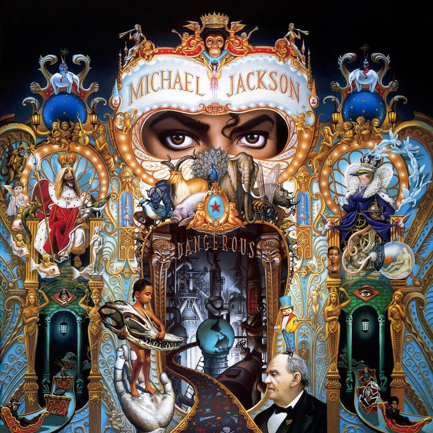

Skip to content
♪
Kairin
Menu
Home
Projects
My Track Record
KB
Projects
Browse by shelf:
All releases
Legal + policy
Digital
Creative

Portfolio website ↗
Privacy compliance analyser ↗
Policy in the real world ↗
Event Space Highlights Reel ↗
Open privacy case file ↗